私はインサイダーゲームにおいて、「役職がインサイダーだった場合、時間切れは絶対にさせない」という信念のもとゲームをしております。
だた、先日初めて私がインサイダーの時に時間切れが発生したため、あまりにも残念で今回筆をとりました。
今後も頑張ってお題を出すぞ！という意思表明のため及び「絶対お題出す教」の布教活動をしたいなと思いました。
イ
ン
サイダー
ゲーム
コラム
Pa
rt 4
絶対
お題 出す教
2020/3/23


背景

白いフラン
■目的
意思表明および「絶対お題出す教」の布教活動。
Topics
時間切れになる要因はナッシュ均衡にある！？
ナッシュ均衡とは
どのプレーヤーも自分の戦略を変更することによってより高い利得を得ることができない戦略の組み合わせ。
インサイダーの場合
「活躍する」と「活躍しない」の２つの戦略があると仮定します。この時、インサイダーが「活躍する」と村人が「活躍しない」場合ばれて負けます。
村人の場合
「活躍する」と「活躍しない」の２つの戦略があると仮定します。この時、村人が「活躍する」とインサイダーが「活躍しない」場合、インサイダー位置がわからず、自分が疑われ負けます。
村人とインサイダーが勝ち負けにこだわるとゲームが成立しません。 インサイダーは村人が活躍するまで潜伏する戦略を取り、村人はインサイダーを炙り出すため質問しない戦略を取れるからです。
白いフラン
おそらく"私は村人のとき活躍したいから上記はなんかピンと来ない"と思う方が大半だと思います。それは正しいけど少し違っていて、重要なのは「活躍する」「活躍しない」が結果論だということです。
結果的にインサイダー側が「活躍する」戦術を選びづらい状況を強いていることもあり得ます。
伝えたかったことは、インサイダーゲームの本質が「勝ち負けを意識すると時間切れになる」ことはゲーム理論的に成り立つということです。
時間切れはインサイダーも村人も「両者負け」ですが、「相手に一方的な勝利を与えない」ことの均衡がとれています。
伝えたかったことは、インサイダーゲームの本質が「勝ち負けを意識すると時間切れになる」ことはゲーム理論的に成り立つということです。
時間切れはインサイダーも村人も「両者負け」ですが、「相手に一方的な勝利を与えない」ことの均衡がとれています。
絶対お題出す教とは
白いフラン
前述の「時間切れゲーム」に異を唱えて立ち上がる宗教団体です。
文字通り、「インサイダーになった場合時間切れをさせない」だけです。
GMがどんな導き方をしようが、どれだけ村人が把握漏れしようが全力で村人にヒントを出し続け、最終的には論理性がないところからでもお題を自分で言います。
そんな絶対お題出す教のメリットを下記に記載します。
文字通り、「インサイダーになった場合時間切れをさせない」だけです。
GMがどんな導き方をしようが、どれだけ村人が把握漏れしようが全力で村人にヒントを出し続け、最終的には論理性がないところからでもお題を自分で言います。
そんな絶対お題出す教のメリットを下記に記載します。
絶対お題出す教３つのメリット
- 時間切れといった不毛なゲームがなくなる
- インサイダーで負けても悔いなし
- インサイダーで勝つと気持ちがいい
時間切れといった不毛なゲームがなくなる
白いフラン
時間切れのゲームは、お題を考えた人はがっかりします。また全員の貴重な時間を奪いながら、全員敗北では幸せな人がいません。
終いには、インサイダーが「GMが××だったらか無理だった」「村が××だったから無理だった」などと責任転嫁することは、例え正論でもマナーが悪く、見ていて気持ちがよくありません。
「今この宗教に加入すればそんな不毛なゲーム」が無くなります！
終いには、インサイダーが「GMが××だったらか無理だった」「村が××だったから無理だった」などと責任転嫁することは、例え正論でもマナーが悪く、見ていて気持ちがよくありません。
「今この宗教に加入すればそんな不毛なゲーム」が無くなります！
インサイダーで負けても悔いなし
白いフラン
私は「時間切れの選択肢がないインサイダーは負けやすい」と思っています。
下記にその理由を記載します。最終的に「だから負けてもいい」と心のハードルを落とす言い訳を作り、一緒に吊られましょう。
下記にその理由を記載します。最終的に「だから負けてもいい」と心のハードルを落とす言い訳を作り、一緒に吊られましょう。
時間切れの選択肢がないインサイダーは負けやすい理由
- お題に近づいていない場合、誰かが活躍するまで待つことができない
- 村人の質問を誘導するような無理な質問をしなければならない
- 自分がお題を言う準備をしなければならない
村人だけで近づけるか近づけないか微妙な時、誰かが活躍するのを待っていると時間切れになってしまいます。自分から時間を見てしっかりヒントを落とす必要があります。
こっちのルートだと時間がかかるというルートに行ってしまった場合、無理やりルート変更をさせるような質問(お店の特定よりも職業特定のほうがいいですか？等)をする必要性があります。
質問の流れを村に完全に一任させるような行動をとると、結果的に自分の首を絞めます。
最終的に自分が言わなければならないといった危惧を常にしなければなりません。
もうわからない村人アピール（後半のパス連打や無駄質問を重ねる）は決してできません。
白いフラン
そもそもコンセプトとしてインサイダーは犯罪者であるため、自分がインサイダーとして働いて吊られることは村の平和です。自分以外のみんなが幸せです。
「今この宗教に加入したら、負けて村を救う」ことができます！
「今この宗教に加入したら、負けて村を救う」ことができます！
インサイダーで勝つと気持ちがいい
白いフラン
絶対お題を出す信念のもと活躍しているため、勝利した場合はインサイダーの中で数々の伏線やゲームコントロールが繰り広げられています。決して村人が活躍したから勝てたインサイダーではありません。
「真の勝利を味わえるのは絶対お題出す教」だけ！
「GMの回答がなんかやばい」「村人が把握漏れ連打している」「村人が誰もお題を知らない」などの境地の時あきらめていませんか？
絶対お題出す教はそんな「真のインサイダーゲーム」の中でもあきらめません。 真のインサイダーゲームで勝利を勝ち得た場合、究極の勝利を味わえます！
「究極の勝利を味わえるのは絶対お題出す教」だけ！
「真の勝利を味わえるのは絶対お題出す教」だけ！
「GMの回答がなんかやばい」「村人が把握漏れ連打している」「村人が誰もお題を知らない」などの境地の時あきらめていませんか？
絶対お題出す教はそんな「真のインサイダーゲーム」の中でもあきらめません。 真のインサイダーゲームで勝利を勝ち得た場合、究極の勝利を味わえます！
「究極の勝利を味わえるのは絶対お題出す教」だけ！
時間切れを回避するために（村人編）
白いフラン
本題と逸れますが、絶対お題出す教の布教者として村人の時気を付けていることを記載します。
極論インサイダーが活躍したいと思わせる場を提供することが重要だと思っています。
対戦ゲームの基本は相手が嫌がることをするだったりしますが、私は村人の時自分がインサイダーだった時に嫌な行動はしないようにしています。
対戦ゲームの基本は相手が嫌がることをするだったりしますが、私は村人の時自分がインサイダーだった時に嫌な行動はしないようにしています。
村人で気を付けていること
- 質問に時間をかけない
- 把握漏れをしない
- わかりやすい質問をする
- 把握漏れしそうな人がいた場合はまとめる質問をする
質問に時間をかけない
白いフラン
ターン性で質問をしている場合に、いい質問をしようと考えたり、とても長い質問をすることはマナーが悪く感じます。
長い質問が一概に悪いとは思いませんが、把握漏れの原因になるため、間を開けずに簡潔な質問をすることを心がけています。
把握漏れをしない
白いフラン
前の質問を聞いていないような質問をする行動はとてもマナーが悪く感じてしまいます。
意図するしないかかわらず「インサイダーだったらそんな把握漏れはしない」と思われる行動は参加している方全員に失礼だと思っています。
意図するしないかかわらず「インサイダーだったらそんな把握漏れはしない」と思われる行動は参加している方全員に失礼だと思っています。
わかりやすい質問をする
白いフラン
難しい言葉を使用した質問や、あまりに漠然としすぎている質問は自分はいいですが、他の人の把握漏れにつながるためしないようにしています。
また、列挙型の質問（「AまたはBまたはCですか？」）で〇になった直後に列挙型「DまたはEまたはFですか？」なども有効質問だと思っていても控えています。
状況にもよりますが、A,B,Cを消化していない段階でほかの他の選択肢が増えるこは、自分がよくても他人の把握漏れにつながります。
把握漏れしそうな人がいた場合はまとめる質問をする
白いフラン
解釈が難しい質問が乱立していたり、GMの答え方が不明瞭な場合などはワンクッション置くような質問をします。
具体的には「××で仮定してもいいですか？」や「××の言いかえがお題ですか？」や「××について質問していったほうがいいですか？」など全体の視点を合わせるような質問をすることを心がけています。
まとめ
白いフラン
インサイダーゲームをする人は、多種多様な目的や楽しみ方を持っていると思っています。
今回記載したことは、あくまでそんな楽しみ方や考え方の１つで、決して強制するわけではありません。
ましてや、時間切れを許容する人を非難するつもりはかけらもありません。
私自身が上記のもと楽しもうとする決意表明をさせていただきました！
私自身が上記のもと楽しもうとする決意表明をさせていただきました！